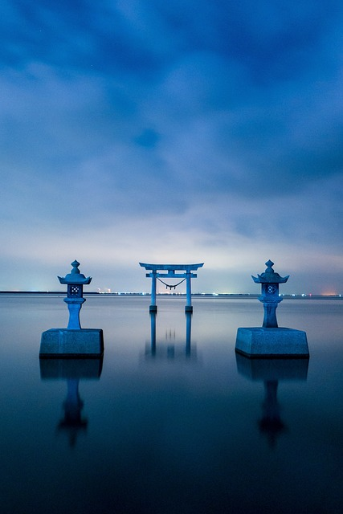
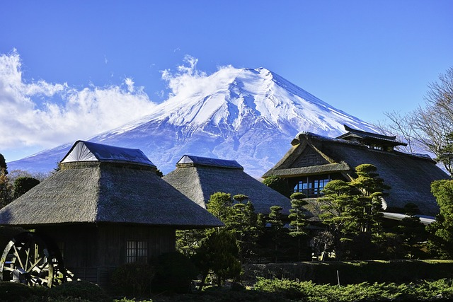

¿Cómo es su cultura?
cultura de Japón, fuertemente influenciada por China en sus orígenes, tiene más de 2600 años de antigüedad,
y se caracteriza por tener una lengua propia, además de religiones y tradiciones específicas.

Japón (Nippon/Nihon en japonés, escrito 日本). Término que proviene de caracteres de origen chino; se traduce como “origen del sol”.
Por esta razón, también se lo conoce como “el país del sol naciente”.

Pero en nuestra investigacion lo que nos interesa es la cultura moderna, dicho de otra manera el entretenimiento: videojuegos, anime, mangas
cosplay, etc.

La afición por el anime
El anime es una de las facetas culturales modernas más importantes de Japón. “Anime” proviene de la palabra “Animation” y dentro de Japón se
utiliza para referirse a cualquier tipo de animación, mientras que en occidente se refiere, únicamente, al contenido producido en la tierra
del sol naciente.
Existe una infinidad de títulos de anime, dirigidos a todo tipo de audiencias, siendo uno de los productos de exportación más importantes
para la economía de Japón. El anime tiene la característica de tener tramas más reales, llenas de emociones, drama y, en algunos casos,
exageración de las acciones realizadas por los personajes.
El Anime: Historia
La historia del anime se remonta a 1907 cuando muchos artistas japoneses se vieron influenciados por la animación occidental y
decidieron crear el contenido nacional de Japón
En la década de los 40, Japón estrenó la primera película animada, auspiciada por el mismo gobierno. Cuando terminó la guerra, a través de los años,
se fue difundiendo el manga (cómics japoneses) a la población, como una distracción a la realidad que afrontaba la nación después de la guerra.